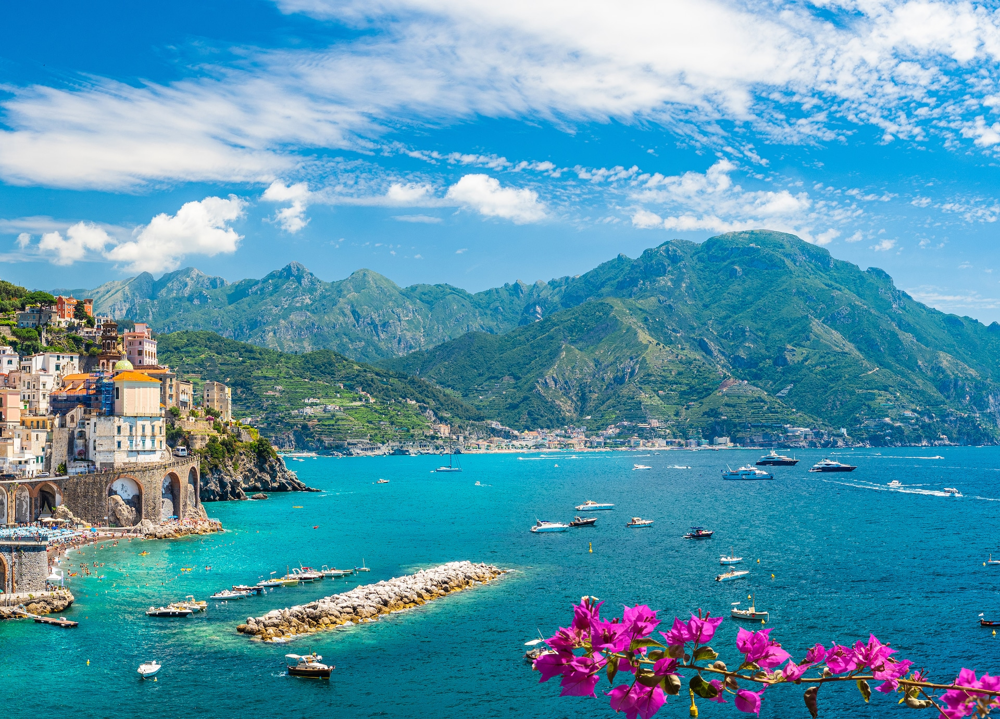

Неаполь

Коротка характеристика
Неаполь — велике місто на півдні Італії, розташоване на березі Неаполітанської затоки. Місто відоме своєю історією, вузькими вуличками, архітектурою та яскравою атмосферою.
Чому я обрав Неаполь
Я обрав Неаполь тому, що він є в Jojo Bizzare Adventure: Part 5
Цікаві факти
- Неаполь є одним із найстаріших великих міст Європи.
- Місто розташоване біля вулкана Везувій.
- Саме Неаполь вважається батьківщиною сучасної піци.
Визначні місця
- Везувій
- Помпеї
- Замок Кастель-Нуово
Моя оцінка
8/10